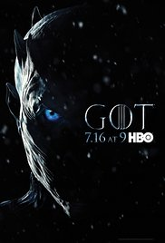

My Series
| Series | Storyline | Enlace |
|  | In the mythical continent of Westeros, several powerful families fight for control of the Seven Kingdoms. As conflict erupts in the kingdoms of men, an ancient enemy rises once again to threaten them all. Meanwhile, the last heirs of a recently usurped dynasty plot to take back their homeland from across the Narrow Sea. | Game Of Thrones |
| People all over the U.S start to realize they have special abilities, like telekinesis, healing abilities, flying powers, time travel, invisibility, and the ability to absorb other's abilities. One man, known as Sylar, wants to gain all the power of these "heroes" so he can be the most powerful and evolved human of all, and stops at nothing to gruesomely kill these people. In order to protect themselves from him, these people must help one another before Sylar can destroy them all, while they each deal with problems of their own. | Heroes |
 | Barry Allen is a Central City police forensic scientist with a reasonably happy life, despite the childhood trauma of a mysterious red and yellow lightning killing his mother and framing his father. All that changes when a massive particle accelerator accident leads to Barry being struck by lightning in his lab. Coming out of coma nine months later, Barry and his new friends at S.T.A.R labs find that he now has the ability to move at superhuman speed. Furthermore, Barry learns that he is but one of many affected by that event, most of whom are using their powers for evil. Determined to make a difference, Barry dedicates his life to fighting such threats, as The Flash. While he gains allies he never expected, there are also secret forces determined to aid and manipulate him for their own agenda. | The Flash |
| A television anthology series that shows the dark side of life and technology. | Black Mirror |
| Life is laid bare as a group of plane crash survivors find themselves stranded on a remote Pacific island. The trauma of the crash soon becomes overshadowed by the island itself, where unseen creatures stalk the jungle, paranormal happenings abound and astonishing coincidences reveal themselves. In this unique environment emotions swell as the survivors battle their inner and outer demons, and strive to live together - so that they won't die alone | Lost |